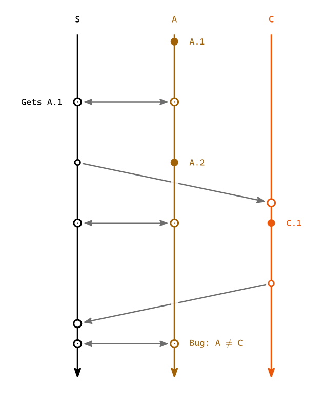

Reference¶
These pages describe the package as it stands on main. A Typst import names an exact version, so what a document sees is whatever it asked for – the changelog is what says which release each of these landed in, and what is still waiting.
- lamport-diagram(caption: none, replicas: (), events: (:), orientation: horizontal, overlays: none, col-gap: none, row-gap: none, text-size: 0.62em, dot: 0.095, message-stroke: 0.9pt + luma(110))¶
- Arguments:
caption – with one, the result is a
figure; without one it is the bare drawing, to place inside afigureof your own. Attach a<label>after the call and the reference resolves to the figure, numbering alongside the document’s others.replicas – the lane order: top to bottom on a horizontal diagram, left to right on a vertical one. Each entry is an id string, a
replica– which also carries that lane’s event defaults – or a bare dictionary of the same fields.events – each replica id mapped to that replica’s local history, in order. An entry is bare content or a bare string for a local event, or one of
event,send,recv,sync,idleandgap. Every replica must have an entry, and every entry must name a declared replica.orientation – which way logical time runs. See
orientation.overlays – your own CeTZ, drawn into the diagram at a layer of your choosing. See Overlays.
The rest are the drawing’s measurements. Lengths without a unit are canvas centimeters: the canvas is laid out at
length: 1cm, so2.0is two centimeters before the document scales anything.The two gaps default to
none, which means the value that suits this orientation rather than no gap at all. What a gap has to make room for is text, and text runs across the page whichever way the diagram does – so the wider default belongs to whichever axis is lying horizontally, and turning a diagram on its side turns the two over with it.Orientation
col-gaprow-gap2.01.51.52.4- Arguments:
col-gap – the distance between two columns of logical time, and so how far apart the solver’s columns land. Along the page on a horizontal diagram, down it on a vertical one. A
gapspan given as a ratio is taken against it, as is thedisplacementthat nudges asend,recvorsyncoff its column – so widening the diagram widens those to match. Anevent'sdisplacementis the exception: it is a ratio of the label’s own extent, the label being what it moves.row-gap – the distance between two lanes. Down the page on a horizontal diagram, across it on a vertical one – which is why its default is the larger of the two there: a label sitting beside a lane runs toward the next one.
text-size – the text size the diagram is drawn at, and what every
eminside it resolves against. Asize: 0.8emon an event is therefore eight tenths of this diagram’s em, not of the surrounding document’s, so a diagram keeps its proportions wherever it is placed.dot – the radius of the mark on a local event. A
recvand asyncare drawn at the same radius, asendat seven tenths of it, and each mark’s backdrop reaches a little past it. The dot inside async'sring is not measured against this one: it is a fraction of the thickness of the timeline it sits on.message-stroke – the stroke every message and
syncarrow is drawn with. Its paint also colors the arrowheads and any label carried by an arrow, so one value dresses the whole of the messaging.col-gapandrow-gapare the two to reach for when a diagram reads too cramped or too sparse;dotandtext-sizeare for when it is going somewhere much larger or much smaller than a page.
- orientation (argument)¶
Which way logical time runs. It takes one of the six values below.
- horizontal (value)¶
Alias of
rightwards
- rightwards (value)¶
- leftwards (value)¶
- downwards (value)¶
- upwards (value)¶
Which way logical time runs. rightwards and leftwards lay the timelines out as
rows and stack the replicas downwards; downwards and upwards lay them out as
columns and stack the replicas rightwards. horizontal and vertical are the two
that need no thinking about, and are rightwards and downwards under a shorter
name. These are plain strings, so orientation: "vertical" works without importing anything.
The orientation decides which sides a label may sit on, and which one it sits on by default:
Orientation |
Sides |
Default |
|---|---|---|
|
|
|
|
|
|
A side the orientation has no room for – above on a vertical diagram, left on a
horizontal one – is not an error: it is dropped back to that default and otherwise ignored, so
flipping a finished diagram from horizontal to vertical stays one edit rather than a compile error
on every lane that named a side. It passes in silence, which is not the ideal: the ideal is a
compiler warning, and Typst gives user code no way to raise one. Printing the complaint into the
document instead would put it in front of the reader rather than the author, which is worse than
saying nothing.

- replica(name, ..defaults)¶
A replica lane, and the defaults the local events on it fall back on.
nameis the id that theeventsdictionary keys on.- Arguments:
label – what the diagram prints for the lane. Defaults to
name.color – the lane’s color. Defaults to the next entry of
default-palette, cycled overreplicasin order.position –
aboveorbelow, the side of the timeline this lane’s event labels sit on –leftorrighton a vertical diagram; seeorientation.size – the text size of this lane’s event labels.
displacement – how far this lane’s event labels slide off their own dot.
first-displacement – the same, for the lane’s opening event, the one that would otherwise crowd the replica name. Left alone it is the orientation’s own:
20%on a horizontal diagram, where the name sits immediately left of that first label, and0%on a vertical one, where the name is before the lane in time and the labels are beside it, so there is nothing to move out of.label,colorandpositionmay also be given positionally, in any order: they are told apart by type, soreplica("A", below, red)andreplica("B", red, below)are the same lane. The rest must be named.
None of these defaults reach a
sendorrecvlabel: those keep their own arguments, and their side is chosen to stay clear of the message arrow.
- event(..args)¶
A local event on a replica’s timeline. Its body is the label – content or a plain string.
position–aboveorbelowthe timeline, orleftorrighton a vertical diagram; seeorientation.size– the label’s text size.displacement– slides the label along the timeline, out of being centred on its own dot. A ratio is taken against the label’s own width, so+50%leaves the label’s left edge over the dot and-50%its right edge, while a length is an exact offset and0(or0%) centres it. On a vertical diagram the ratio is taken against the label’s height instead, that being what runs along the timeline there.width– wraps the label to a fixed width instead of letting it run along the timeline on one line, which is what keeps a long label from crowding its neighbors. Named only: a bare length is read as adisplacement, that being the far commoner one to reach for. The box is centred on the mark like any other label, and its contents are left to you – wrap the body inalign(center, ..)if centred lines read better than the ragged right edge.halo– how far the label’s backdrop reaches past the label’s own box, which is what breaks an arrow crossing the lane so it does not crowd the glyphs.auto(the default) matches the reach of the disc under a mark, so a label and a dot break an arrow by the same amount; a length sets an exact reach, andnonedrops the backdrop, letting whatever is behind show through.fill– what that backdrop is painted with.auto(the default) is white, which is what breaks whatever runs behind the label; a paint is used as given, so a label sitting in a wash an overlay laid down can be given that same wash and read as part of it rather than as a hole punched in it; andnoneleaves the backdrop unpainted, which ishalo: nonewith the label’s box kept. A translucent paint hides no more than it says, so an arrow behind a washed label still shows through – and a translucent fill over a wash of its own color compounds with it into a slightly darker patch.
The dot itself never moves: it is the event’s place in time, which the layout solves for.
Arguments are told apart by type, so they may come in any order and every one of them is optional:
event(below, +50%)[AddFile1] and event(+50%, below, "AddFile1") are the same event. For the
common case of a label and nothing else, bare content or a bare string in an events array is
shorthand, so [AddFile1], "AddFile1" and event[AddFile1] are the same event too.
- send(name, ..args)¶
- recv(name, ..args)¶
The points where the message
nameleaves one replica and is applied on another. Exactly onesendand onerecvmust exist for each name.An optional label for the point goes positionally –
send("push")[pushed],recv("pull")[now duplicated]– or asbody, withsizesetting its text size andatoverriding the side it sits on.Both take
displacement, which nudges the point off the column it is solved into, in either direction. A ratio is taken against the column gap. Only the defaults differ:on a
recvit is1cm– how far right of itssendthe point lands whenever nothing on its own replica pushes it further, and enough to lean the arrow forward.recv(..., displacement: none)leaves it on its column, drawing a vertical arrow when the receiving replica has nothing else competing for that column.on a
sendit isnone– a send sits on its own column unless you say otherwise, since it is the receive that leans a message forward. Reach for it to tilt an arrow away from whatever a vertical line would otherwise run through, or to separate two sends the solver put in one column.
Both also take
haloandfill, the label’s backdrop, which mean exactly what they mean on anevent.sendalso takes:- Arguments:
label – labels the arrow itself rather than the point, and keeps its own styling.
delay – the minimum number of columns the matching
recvis pushed forward.0(the default) leaves the two in one column, where the receive’s owndisplacementis what leans the arrow forward;1or more buys the message a whole column of flight. The nudge is a drawing offset the column solver knows nothing about, so a negative one wide enough to put a point visually behind its own counterpart does not trip the causal-cycle check. It is equally outside what the drawing sizes itself to, so a displacement large enough to push a bodiless mark left of where its lane starts will leave it overhanging the replica name.
- sync(name, ..args)¶
One end of a two-way exchange. In a single round trip each side gives the other the events it lacks, so both ends come out of the exchange holding the same events – which is not the same as holding the same state, so each end takes its own label. A
send/recvpair is the one-way message by comparison.Exactly two
syncpoints must carry the same name, and they must sit on two different replicas. The pair is drawn as one arrow with a head at each end, and each end as a hollow mark with a dot of ink inside it, narrower than the timeline it sits on: neither side of an exchange is the sender, so neither is drawn smaller the way asendis, and the inner dot is what tells a sync’s end from arecv. The two ends share a column: neither side can finish the exchange before the other one starts it. A name cannot be both asyncand asend/recvmessage.An optional label for the point goes positionally –
sync("push")[rolled back]– or asbody, withsizesetting its text size,atforcing the side the label sits on, andhaloandfillsetting its backdrop as they do on anevent.labelinstead labels the arrow itself; either end may carry it, and the first one given wins.displacementnudges this end off the shared column, which tilts the arrow away from whatever the vertical line would otherwise run through; it is a drawing offset and says nothing about the order.#lamport-diagram( replicas: ("Client A", replica("Server", below), replica("Client B", below)), events: ( "Client A": ([Edit], sync("first", label: "round trip"), idle(2), sync("third")[has both edits]), "Server": (sync("first"), sync("second"), idle(1), sync("third")), "Client B": (idle(1), [Edit], sync("second")[has both edits]), ), )
- idle(n)¶
Spacing to convey idle time passing:
ncolumns of ordinary timeline with nothing drawn on them. The specific semantics are for the author to explain. The solver counts them, so the next event on this lane landsncolumns later.Usable bare or called, so
idle,idle()andidle(2)are the same thing: two columns is enough for the stretch to read as a pause rather than as the ordinary spacing between two events.gapis the sibling that shows the stretch, with dots, for time the diagram elides;idleshows nothing, because nothing happened.
- gap(size)¶
Elided time: a stretch of dotted timeline standing for events the diagram does not show, taking one column of its own. The size is how much of that column the dots span –
"small","medium"(the default) or"large", or a length or a ratio of the column gap for an exact span, which past a full column runs into the neighboring marks.Usable bare or called, so
gap,gap()andgap("medium")are the same thing.
- above (value)¶
- below (value)¶
- left (value)¶
- right (value)¶
aboveandbelowaretopandbottomunder names that read better for a diagram of one horizontal line per replica, and they are those same values, so either spelling works wherever a side is asked for.leftandrightare re-exported alongside them, so one import line covers every side a diagram may ask for whichever way it runs. They are the built-in alignments of those names.
- default-palette (value)¶
The lane colors, cycled over
replicasin order. Override per replica withreplica("A", red).
- overlays (argument)¶
An escape hatch for drawing arbitrary CeTZ into a diagram, in the diagram’s own coordinates, addressing the diagram’s own points, and at a chosen depth – a band behind a stretch of time, a ring around the event that went wrong, a note that breaks around the lanes the way its own arrow does. It has a page of its own: Overlays.